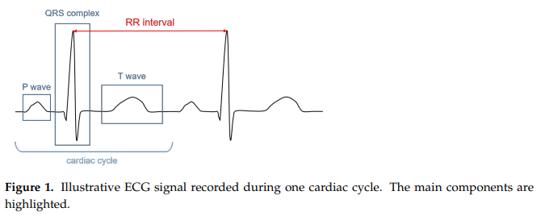
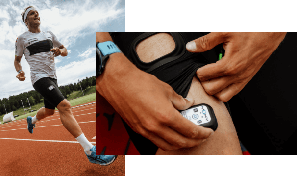

Introduction to Physiological Sensors
How can we use technology to help diagnose disorders, improve athletic performance, and guide rehabilitation? We will start to answer this question in this section of the tutorial by giving an overview of the sensors used to measure physiological information about the human body. By studying how strong muscles are, how much air the lungs can circulate, how fast the heart can pump blood throughout the body, and more, we can gain a better understanding of how the human body behaves and design tools that help people achieve their goals.
The information on each sensor will be organized as follows: first, we’ll give a brief overview of what it’s used for, then some instruction on how it is worn and what it measures (including reliability of the data), and perhaps most importantly, some discussion on what you could study or build using it.
Surface Electromyography: Delsys Trigno
Surface electromyography (sEMG) is a technique used to measure electromyographic signals that correspond to muscle activity. Muscles throughout the human body are activated in response to neural stimulation from the brain, and as they contract, they release an electrical impulse that circulates throughout bones and tissue. These impulses are captured by the sEMG sensor, and after applying some signal processing techniques that we’ll see later in the Data Analysis section, they can be incredibly useful in studying the patterns of our muscles.
Placement & Measurement
For the purposes of this tutorial, we’ll be using the Delsys sEMG sensors, widely regarded for their clinical-grade quality in research and industrial settings. Specifically, three of their most common products are the Trigno Avanti, Trigno Mini, and Trigno Quattro, as shown below (images from NASA Spinoff article).


The Trigno Avanti is their “standard” sEMG sensor.
The Trigno Mini is a smaller form factor sensor, allowing you to get data from muscles that may be harder to reach with the Avanti.
The Trigno Quattro is similar to the Trigno Mini, but there are four sensing heads, allowing you to get precise data from multiple locations.
Each of these devices also contains an IMU (inertial measurement unit) sensor, which reports data on acceleration and orientation. This can be used in conjunction with the sEMG signal to understand the motion of the muscle. Finally, the devices also have LED lights on the top to indicate the status of the sensor.
The sensors are placed on the surface of the skin and stick via a simple adhesive. Be careful as to where you place them, since they should be placed as close to the muscle as possible to achieve high-quality results. The surface of the skin should be cleaned with an alcohol wipe before placing the sensor to remove any oils or contaminants which could interfere with the electrical signal. The direction of the sensor must also match the direction of the muscle fibers; an example from the Delsys Technical Notes on EMG Sensor Placement is shown below.

Traditionally, intramuscular electromyography (iEMG) is another technique used to measure muscle activity by sticking a needle inside the skin next to a particular muscle. While this is still used in some clinical applications, especially when muscles are deep into the skin or have a small cross-sectional area, it is losing popularity as it’s more invasive for data collection.
Finally, an important concept in most sEMG applications is maximum voluntary contraction (MVC). In order to measure muscle strength, especially in patients with neuromuscular disorders, we have the patient flex a certain muscle as much as they can and use the resulting sEMG value as a baseline. Then, all future readings are compared as a percentage of MVC.
Applications
As mentioned previously, sEMG can be used to study a wide variety of behaviors. Many of these applications involve developing machine learning algorithms for automated classification based on sEMG signals, though this is not necessarily the only use case. The following examles illustrate the versatility of sEMG:
It can help diagnose certain muscular disorders, including muscular dystrophy and chronic pain [1] [2].
It can help identify nerve dysfunction and muscle fatigue [3] [4] [5] [6].
It can be used as a control signal for prosthetic and other robotic devices [7] [8] [9].
It can be used to help understand human motions via the collection of large-scale sEMG datasets to train machine learning algorithms [10] [11].
Heart Rate: Polar H10
Heart rate (HR) sensors are used to record the rate at which the heart pumps blood throughout the body, measured as the number of contractions (beats) per minute (bpm). Various factors can affect a person’s heart rate, including fitness, stress, diet, genetics, medications, or disease/illness. The average HR for a normal, healthy person is between 60-100 bpm at rest, and that could drop to 40 bpm or lower for endurance athletes.
Heart rate variability (HRV) is a measure of the variation in time (milliseconds) between consecutive heartbeats. The heartbeat isn’t exactly regular all the time, so HRV serves as an indicator for how well your body can respond to stress or exercise. It’s usually measured over a period of at least five minutes, and a higher value is better as it indicates that the heart can recover faster.
HR and HRV are widely considered as essential metrics for understanding human health and performance.
Placement & Measurement
For this tutorial, we will focus on the Polar H10 HR sensor. The device is worn around the chest (typically under the shirt), with a pad placed close to the heart and held in place via a buckle and strap. This relatively unobtrusive design makes it ideal for measuring HR during intense exercise. An example of wearing the device is shown below (image from the Polar blog).
{kind=link}
The Polar H10 is an example of an electrocardiograph, which is a type of HR sensor that measures the electrical potential of the heart’s activity in order to extract the HR information. We refer to the resulting electrical signal as an electrocardiogram (ECG, or EKG). A typical ECG is shown below (figure from [12]). You can find a detailed description in the paper, but for now, just know that it shows the stages of depolarization and repolarization (changes in electric charge distribution) of different parts of the heart. In particular, notice the RR interval on the graph: the time (seconds) between two successive R peaks. To calculate the heart rate, simply divide 60 (seconds per minute) by the RR interval. We’ll explore this process further in Data Analysis.
{kind=link}
Reliability & Alternatives
There are many other techniques used for measuring HR. One common example is photoplethysmography (PPG), which uses LED lights to detect blood volume changes underneath the skin. You’ve probably seen this on many different kinds of fitness/smart watches, where it’s often used for monitoring exercise or sleep. These devices are convenient because they’re easier to wear than the chest strap, and in most cases, their accuracy is comparable to the chest strap ECG. However, many studies have concluded that PPG is not as accurate as ECG during high-intensity activities, or when clinically assessing HRV [13] [14] [15], though some have shown that they may be acceptably close in certain applications [16] [17].
Studies [18] [19] have shown that the Polar H10 chest strap device is comparably accurate to the Holter medical-grade ECG. As such, these wearable sensors are considered the gold standard when it comes to commercial HR sensing.
Applications
As we’ve discussed, there are a wide variety of clinical and fitness-related applications for HR and HRV sensing. We won’t attempt to provide an exhaustive list here, but just to get you thinking, here a few mobile and virtual reality applications that integrate heart rate feedback [20] [21] [22] [23]. We’ll explore this more in Integration with VR.
Muscle Oxygen: Moxy Monitor
A muscle oxygen sensor is used to measure the saturation of oxygen levels (SmO2) within various muscle groups in the human body. It represents the percentage of hemoglobin that is carrying oxygen in muscle tissue, and can be thought of as a measure of balance between supply and demand for oxygen in the muscle. During low intensity activity, SmO2 generally increases as the heart rate increases and blood vessels dilate, allowing for more blood flow; conversely, during high intensity activity, SmO2 drops as the heart struggles to keep up supplying oxygen to the muscles.
For more information on SmO2 (and the sources of the information here), please refer to the Moxy website for a scientific explanation and the physiology surrounding training zones.
Placement & Measurement
For our tutorial, we’ll use the Moxy monitor. They sell compression shorts with the sensor attached, and you can also tuck the sensor under your own shorts or strap it elsewhere on the skin using tape or adhesive. An example of wearing the device is shown below (image from Moxy).
{kind=link}
The Moxy sensor uses near-infrared spectroscopy (NIRS), which is a system that sends near-infrared light through some medium and measures the light reflected back with a photodetector. Since oxygenated and deoxygenated hemoglobin absorb different amounts of light at different wavelengths, we can obtain a measurement of SmO2 based on differences in reflectance. Again, refer to the scientific explanation for more details.
Applications
Muscle oxygen saturation is gaining popularity as a tool for physiological research. See some examples below:
It is used in sports science, most notably cardiovascular exercise but also a wide variety of other activities, to assess performance and tailor training programs [24] [25] [26] [27].
It can be used to help assess the effects of exercise in patients with cardiovascular [28] [29] [30] and neuromuscular [31] diseases.
Oxygen Volume: VO2 Master Analyzer
Oxygen volume (VO2) sensors are used to measure oxygen consumption during aerobic and anaerobic physical activity. This information is crucial for determining levels of cardiovascular fitness and can be used to design personalized training regimens for athletes.
Placement & Measurement
For our tutorial, we’ll be using the VO2 Master Analyzer. The device is composed of a face mask strapped around the head. The mask works by measuring the oxygen and carbon dioxide concentration of air coming into and going out of the body. An example of someone wearing the VO2 Master Analyzer is shown below (image from VO2 Master).

The most important facet of oxygen volume sensing is maximal oxygen consumption (VO2max), which is the maximum amount of oxygen that an individual can utilize during intense exercise. This is determined by two factors: the amount of blood the heart can pump per beat and the efficiency with which the muscles can use the oxygen extracted from that blood. Further testing can reveal ventilatory thresholds, which are certain inflection points of the body’s performance during exercise. During the earlier stages of intensity (before the first threshold, VT1), ventilation increases linearly with oxygen consumption, but at higher stages (between thresholds and after the second threshold, VT2), the increase becomes disproportionate to oxygen consumption. Visit the VO2 Master Blog Series for more information on VO2max and its use in fitness.
Applications
As mentioned above, oxygen volume sensing is used in a variety of applications related to cardiovascular fitness. Included below are several example use cases:
It can be used to design and compare the effectiveness of training regimens for endurance athletes [32] or the general population [33], especially for high-intensity interval training (HIIT). It was also shown as a potentially accurate measure of caloric expenditure in atheletes [34].
It can be used to assess the impacts of musculoskeletal disorders and other chronic pains [35] [36] [37].
Section Review
In this section, you were introduced to four different types of physiological sensors. You learned about what data on the human body we can use to assess performance, and how sensors are designed to capture that data. You were also exposed to some of the active research in human health and performance that uses these sensors. All of this will be an important background for the next sections, where we’ll take a deep dive into the process of collecting, presenting, and analyzing this data. Keep up the good work!